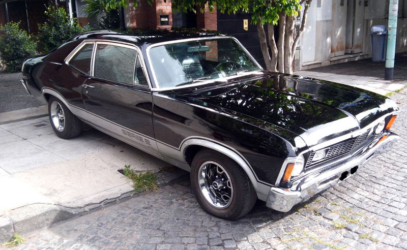
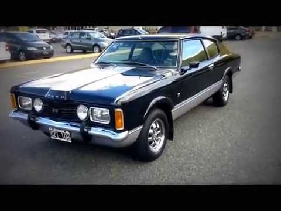
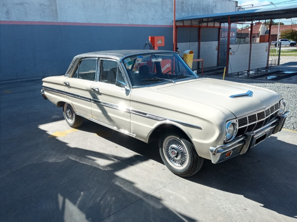
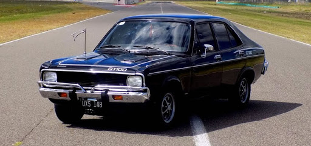
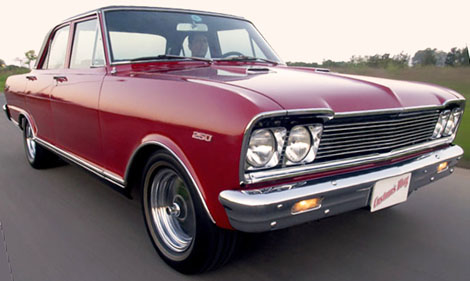
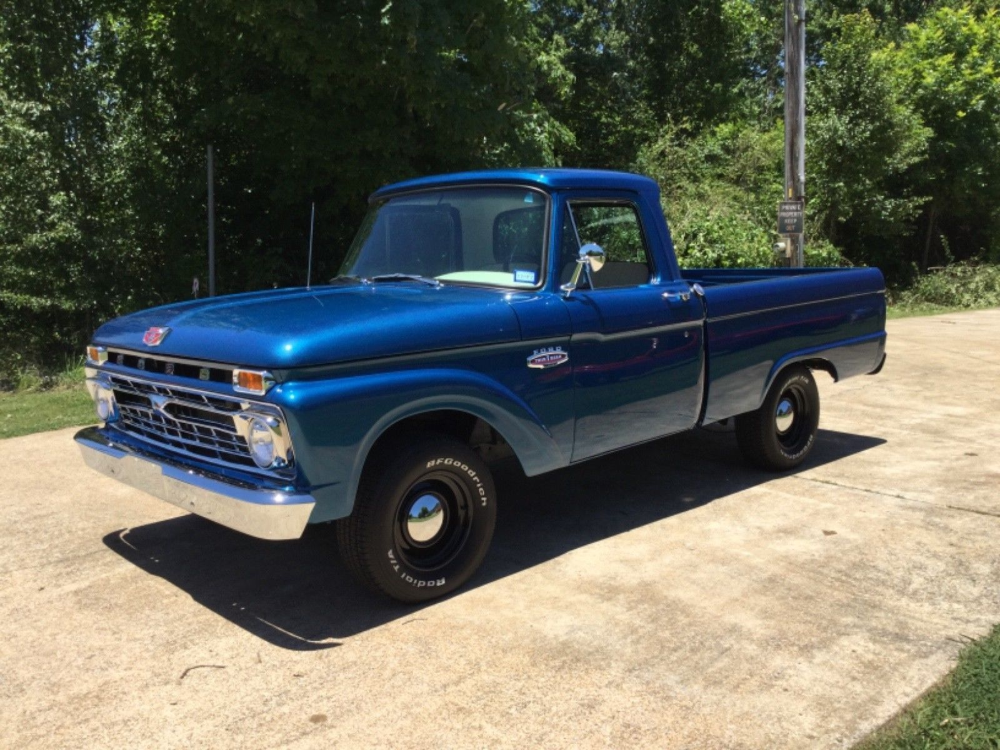
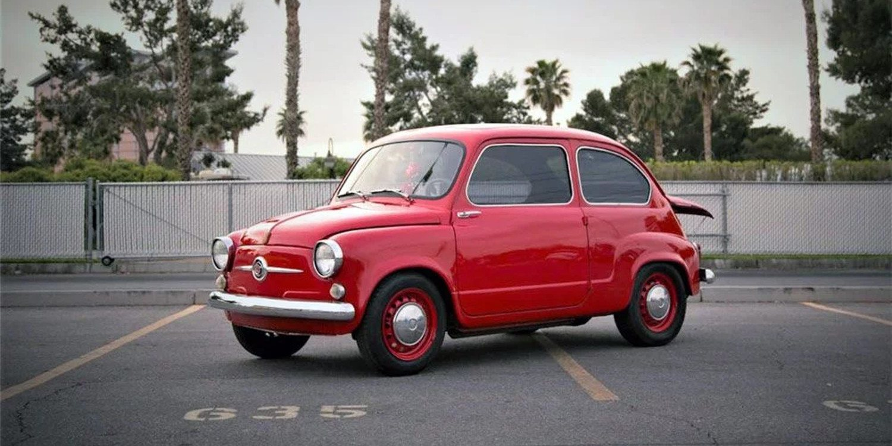
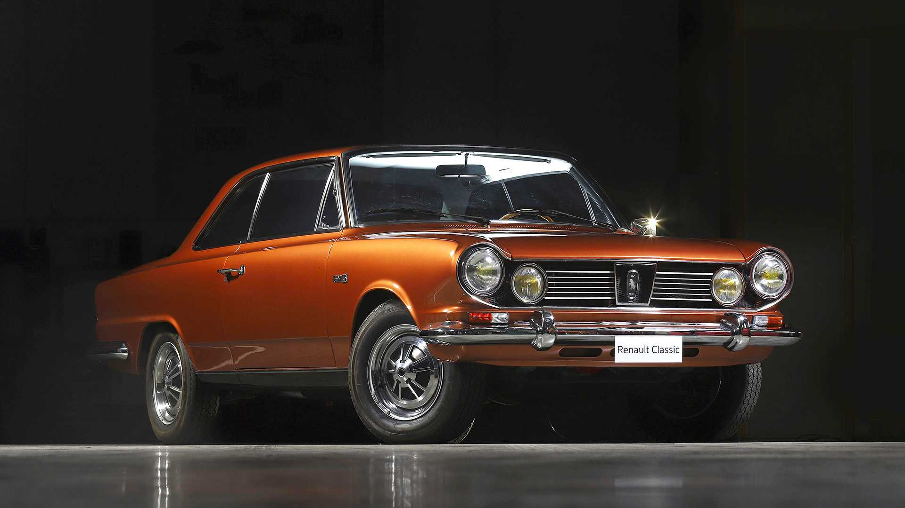
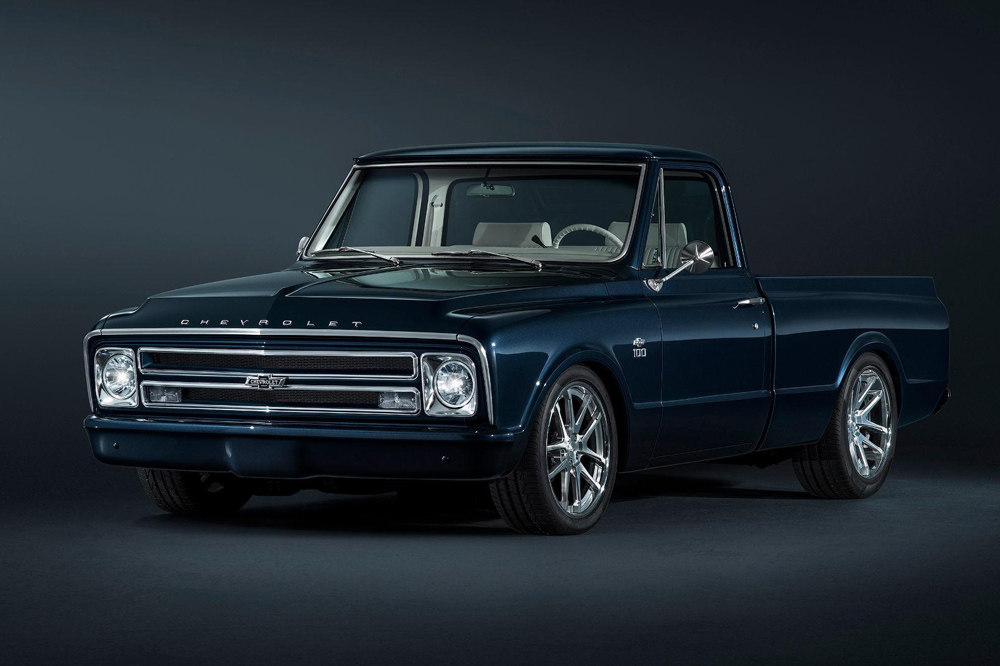

Chevrolet serie 2 SS
El Chevrolet Chevy es un automóvil de turismo construido por General Motors de Argentina para la marca Chevrolet, durante las décadas de 1960 y 1970. El coche es un derivado del modelo estadounidense Chevrolet Nova de tercera generación. Su aparición significó la difícil tarea de hacer sombra al Ford Falcon y al IKA Torino, los cuales ya estaban instalados en el mercado y contaban con buena reputación...
Leer más

Taunus Coupé GT SP
2.300 cc "SP" (Special Performance). Ciclo Otto, 4 tiempos, longitudinal delantero, 4 cilindros en línea. Cilindrada 2.299 cm. Diámetro 96,00 mm. Carrera 79,4 mm. Árbol de levas a la cabeza comandado por correa dentada sin lubricación.
Cigüeñal apoyado en 5 bancadas. Sistema de ventilación de cárter. Filtro de aire húmedo, en baño de aceite...
Leer más

Ford Falcon Deluxe
El Ford Falcon es un automóvil fabricado por Ford Motor Argentina a partir del año 1956 hasta 1986 y por la empresa conjunta Autolatina (Ford-Volkswagen) desde 1987 hasta 1993. Fue uno de los primeros autos medianos en llegar a Argentina y uno de los pioneros de una nueva etapa de la industria automotriz de ese país, junto al Valiant II, el Chevrolet 400 y el Rambler Classic...
Leer más

Dodge 1500
El Dodge 1500 fue un automóvil de turismo del segmento C fabricado en la República Argentina por Chrysler-Fevre Argentina S.A., subsidiaria nacional de la firma norteamericana Chrysler, a su vez propietaria de la marca Dodge. Se trataba de un automóvil compacto, basado en el modelo Hillman Avenger producido en Inglaterra por...
Leer más

Chevrolet 400
El Chevrolet 400 es un automóvil compacto fabricado por la General Motors de Argentina en el año 1962. Con este auto General Motors respondió a la propuesta planteada por Ford y Chrysler, cuando ambas trajeron al país los primeros autos compactos: El Ford Falcon y el Chrysler Valiant....
Leer más

Ford 100
La Ford F-100, parte de las Ford F-Series, fue un modelo de camioneta de tamaño completo, fabricado por Ford Motor Company, que ha sido vendido de forma continua a partir del año 1948 en Estados Unidos, y en variadas fechas en Canadá, México, Brasil, Argentina, Perú, Chile, Colombia y Venezuela...
Leer más

Fiat 600
El Fiat 600 fue un pequeño automóvil diseñado por Dante Giacosa y construido por la empresa italiana Fiat desde 1955 hasta 1986. Fue un éxito mundial que se fabricó en muchos países, en la mayoría de ellos bajo la marca Fiat, siendo conocido popularmente como "Fito". También se fabricó bajo otras marcas...
Leer más

IKA Torino
El IKA Torino (luego llamado Renault Torino) es un automóvil de turismo producido por el fabricante argentino de automotores Industrias Kaiser Argentina (IKA-Renault desde 1967) entre los años 1966 y 1975, y por Renault Argentina S.A. entre 1975 y 1981. Era un automóvil compacto del segmento E...
Leer más

Chevrolet C10
El modelo del año 1960 introdujo un nuevo estilo de la carrocería de la camioneta pick-up que contó con muchas novedades. El más importante de estos eran un marco de la escalera desplegable central, permitiendo que la cabina se siente inferior, y la suspensión delantera independiente...
Leer más